import pandas as pd
import numpy as np
import matplotlib.pyplot as plt
%matplotlib inline
import seaborn as sns3 EDA
3.1 Define Your Audience / Stakeholder
This report is made for the strength and training team for the men’s basketball team at UVA. Specifically made in mind for Mike Curtis, who is the head of strength and conditioning.
3.2 Define Your Problem Statement
Injuries plague every athlete team, especially as the season progresses. How does a player’s position dictate their PlayerLoad and therefore their likelihood of injury?
3.3 Key Variables
Independent variable: Date or the time during the season the game was played, will be separated by season (not including the practice dates) Dependent Variables: These will be measuring the amount of effort or exertion in a game, such as Total Acceleration Efforts, Total Player Load, Player Load per Minute, IMA Accel Total, IMA Decel Total, IMA Jump, and the Explosive Efforts.
We are also planning on studying how this varies by specific player throughout a season and by the average positions. In order to find this we will use the About, Date, and Position columns.
3.4 Descriptive Statistics & Distributions
3.4.1 Import all necessary libraries:
3.4.2 Load the cleaned data sets:
df1 = pd.read_csv("./season1_cleaned.csv")
df2 = pd.read_csv("./season2_cleaned.csv")3.4.3 Creating Functions for Plotting and Printing Stats
# Function to create a histogram for numerical columns
def hist_stat(col, seasondf):
# Season/column specific:
color = ''
season = ''
# if Season 1, make it purple
if seasondf.equals(df1):
season = 'Season 1'
color = 'purple'
# if Season 2, make it green
elif seasondf.equals(df2):
season = 'Season 2'
color = 'green'
else:
season = 'Unknown Season'
color = 'blue'
# Plot the histogram
plt.hist(col, bins=30, color=color, alpha=0.5, edgecolor='black')
# Remove spines
plt.gca().spines['top'].set_visible(False)
plt.gca().spines['right'].set_visible(False)
# Add title
title = season + " " + col.name + " " + 'Distribution'
plt.title(title)
# Add xlabel
plt.xlabel(col.name)
plt.show()
# Print numerical statistics, such as mean, standard deviation, minimum, maximum, and percentiles
mean = np.mean(col)
std = np.std(col)
min = np.min(col)
max = np.max(col)
percentiles = np.percentile(col, [25, 50, 75])
print("mean:", mean, "\nstd:", std, "\nmin:", min, "\nmax:", max, "\nPercentiles:", percentiles)
# Function to create a histogram for categorical columns
def categorical_stats(col, dataframe):
color = ''
season = ''
# if Season 1, make it purple
if dataframe.equals(df1):
season = 'Season 1'
color = 'purple'
# if Season 2, make it green
elif dataframe.equals(df2):
season = 'Season 2'
color = 'green'
else:
season = 'Unknown Season'
color = 'blue'
# Plot the histogram
plt.hist(col, color=color, edgecolor='black')
# Remove spines
plt.gca().spines['top'].set_visible(False)
plt.gca().spines['right'].set_visible(False)
# Add title
title = season + " " + col.name
plt.title(title)
plt.show()3.4.3.1 Total Player Load Graphs:
hist_stat(df1['Total Player Load'], df1)
hist_stat(df2['Total Player Load'], df2)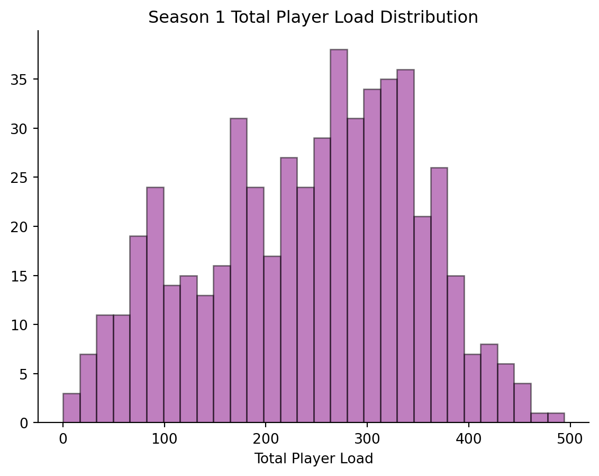
mean: 241.77308759124088
std: 105.40557579091106
min: 0.155
max: 494.021
Percentiles: [167.444 256.8645 320.69175]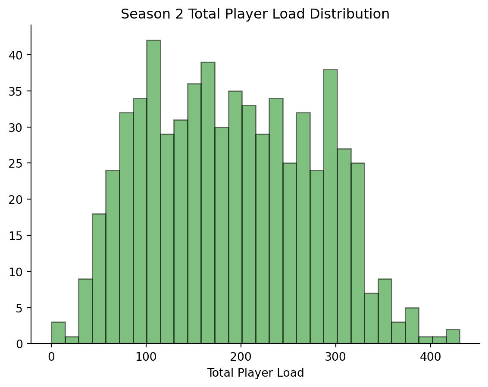
mean: 190.69367781155015
std: 87.44444716531845
min: 0.251
max: 430.681
Percentiles: [115.1855 188.7165 262.91825]From the 2 seasons worth of Total Player Load distributions and statistics, it appears:
- There’s a slight positive skew (right skewed) with a high peak towards lower values (less than 50).
- It appears that there’s a smaller peak towards 150 to 175
- A gradual decline after 200 all the way to 400+ in
Total Player Loadappears to exist. - Percentiles also display similar patterns with the 25, 50, 75 percentiles for both seasons.
- Season 1 saw a higher initial peak at near 200 for a low point whereas Season 2 saw the highest frequency around 175 for the initial peak.
The distributions were similar, but the initial peaks were different. Therefore, we might want to look more into why Total Player Load sees this unusual distribution.
3.4.3.2 Player Load Per Minute Graphs:
hist_stat(df1['Player Load Per Minute'], df1)
hist_stat(df2['Player Load Per Minute'], df2)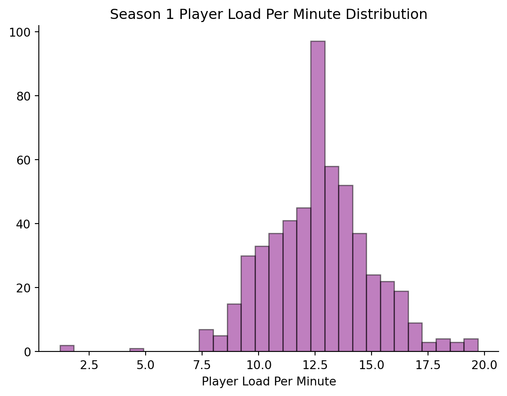
mean: 12.639233576642336
std: 2.3229364432038557
min: 1.2
max: 19.7
Percentiles: [11.175 12.6 14. ]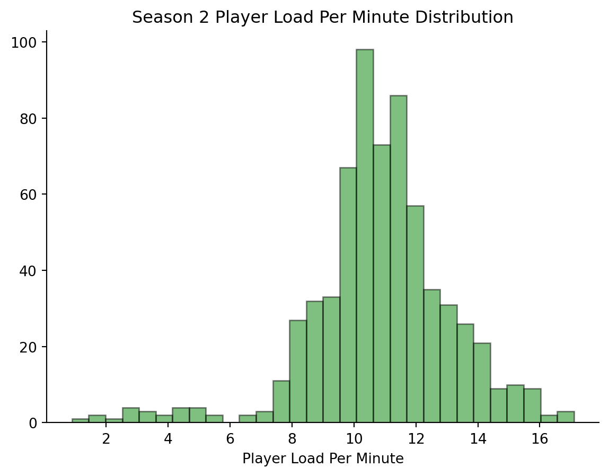
mean: 10.86595744680851
std: 2.2742504182157637
min: 0.9
max: 17.1
Percentiles: [ 9.9 10.9 12.1]Compared to Total Player Load, the Player Load Per Minute attains a relatively normal and symmetrical distribution. This indicates that players more so see an “average” Player load Per Minute between 5 to around 12.5 Player Load for every minute whereas Total Player Load varies greatly between players in certain warmup/game groups.
3.4.3.3 IMA Accel Total Graphs:
hist_stat(df1['IMA Accel Total'], df1)
hist_stat(df2['IMA Accel Total'], df2)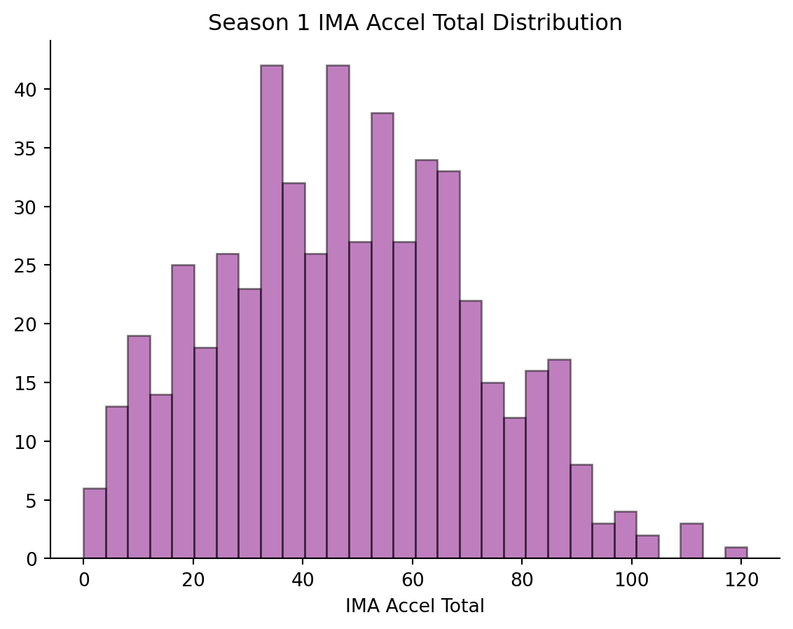
mean: 48.083941605839414
std: 23.163578047602947
min: 0
max: 121
Percentiles: [32. 47.5 64. ]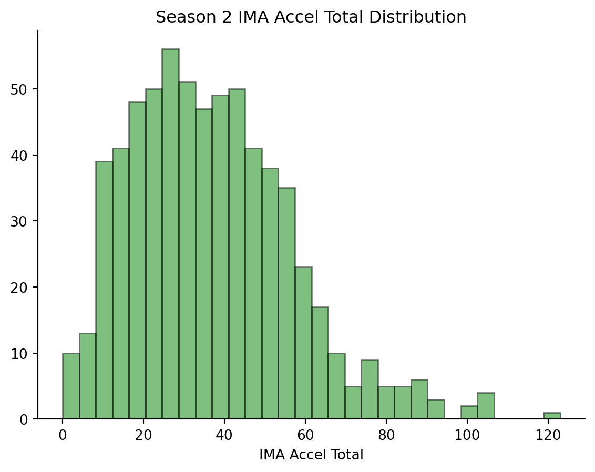
mean: 36.765957446808514
std: 20.059560153866244
min: 0
max: 123
Percentiles: [22. 34. 49.]3.4.3.4 IMA Decel Total Graphs:
hist_stat(df1['IMA Decel Total'], df1)
hist_stat(df2['IMA Decel Total'], df2)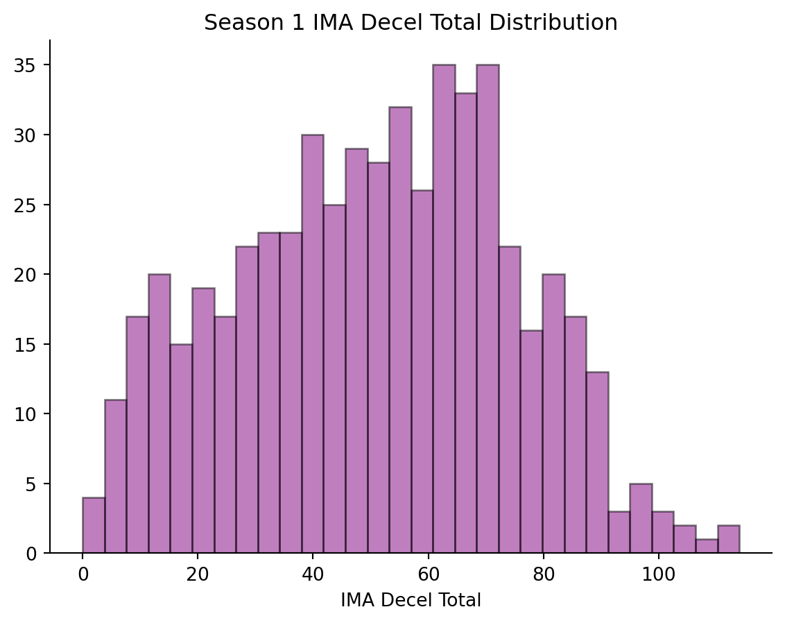
mean: 50.556569343065696
std: 23.999439103480896
min: 0
max: 114
Percentiles: [32. 52.5 69. ]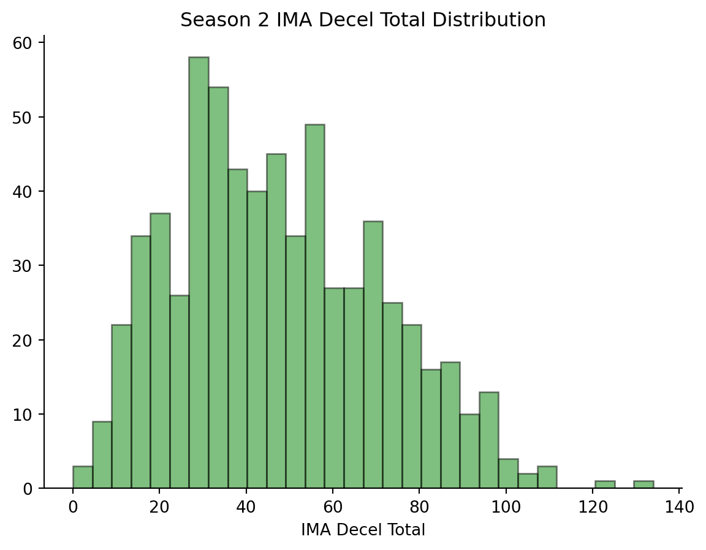
mean: 47.433130699088146
std: 23.725108784898293
min: 0
max: 134
Percentiles: [30. 45. 64.]The IMA Accel Total Distribution is more positively/right skewed compared to that of the IMA Decel Total when we compare the respective season graphs along with the percentile breakdowns. This is likely due to most players not accelerating or decreasing that often, but rather due to minor movements contributing to slowing down or speeding up. For example, a player could passively walk forward one step, and this would count as an acceleration.
Another contributing factor could be that in IMA Decel Total that basketball players also back pedal during games/warm-ups. Catapult sensors might have a hard time understanding that facing one direction while accelerating in the opposite is possible. So in IMA Decel Total, we might see a second small peak around 30 for both because the sensors think the person is decelerating when they’re accelerating in a back pedal.
3.4.3.5 IMA Jump Count Low Band Graphs:
hist_stat(df1['IMA Jump Count Low Band'], df1)
hist_stat(df2['IMA Jump Count Low Band'], df2)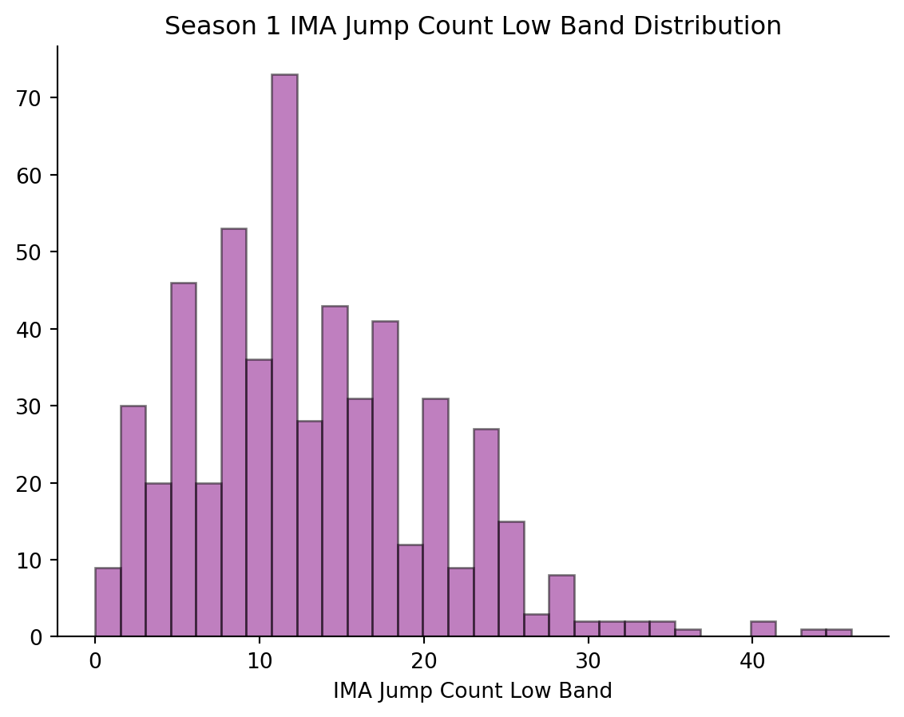
mean: 13.246350364963504
std: 7.394481901565035
min: 0
max: 46
Percentiles: [ 8. 12. 18.]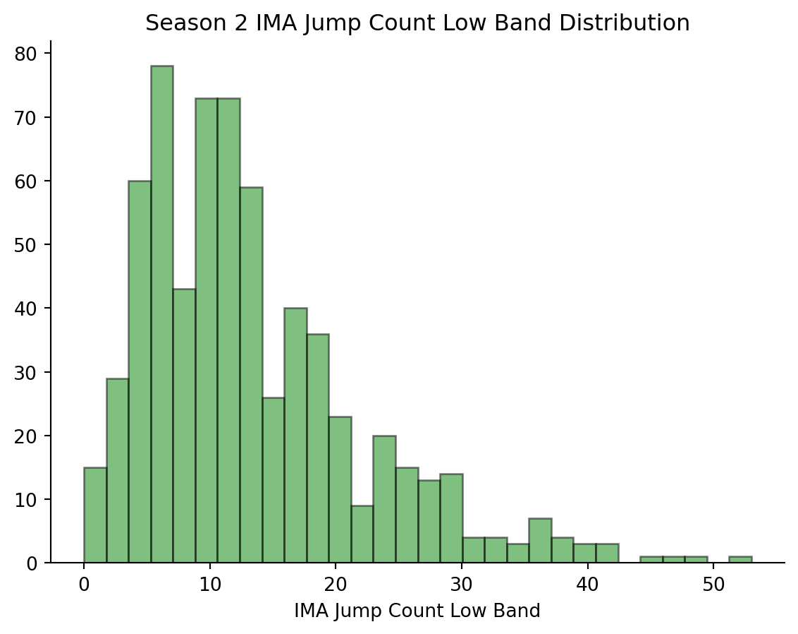
mean: 13.300911854103344
std: 8.74098923380777
min: 0
max: 53
Percentiles: [ 7. 11. 17.]3.4.3.6 IMA Jump Count Med Band Graphs:
hist_stat(df1['IMA Jump Count Med Band'], df1)
hist_stat(df2['IMA Jump Count Med Band'], df2)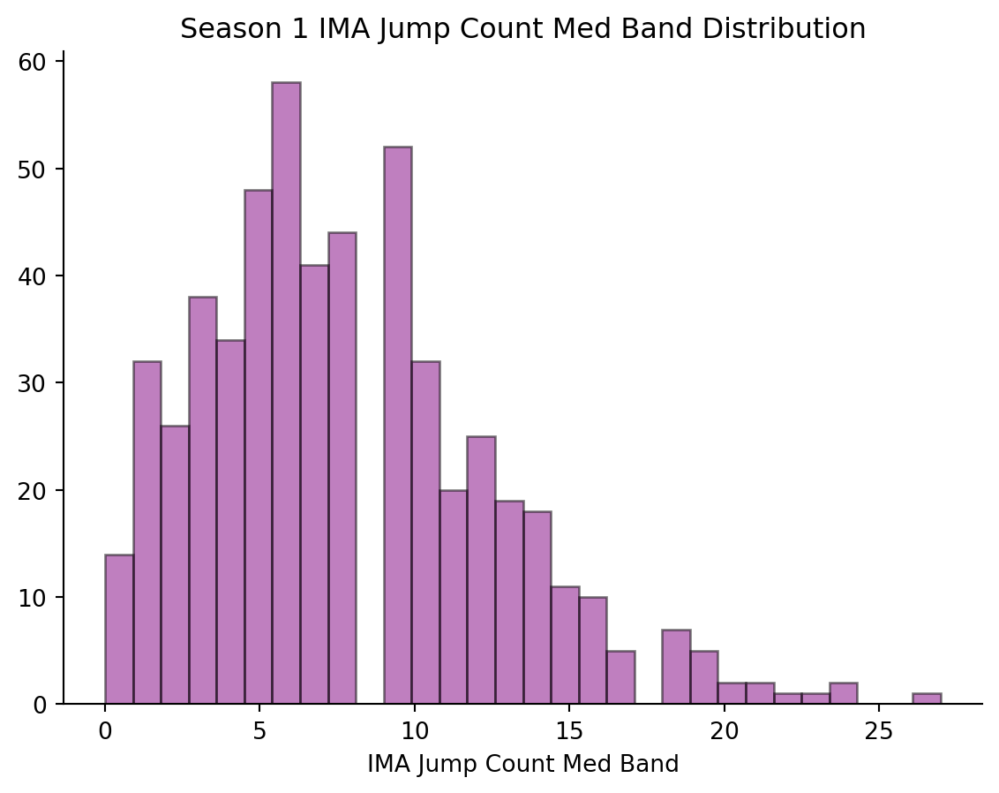
mean: 7.666058394160584
std: 4.7241205658490255
min: 0
max: 27
Percentiles: [ 4. 7. 10.]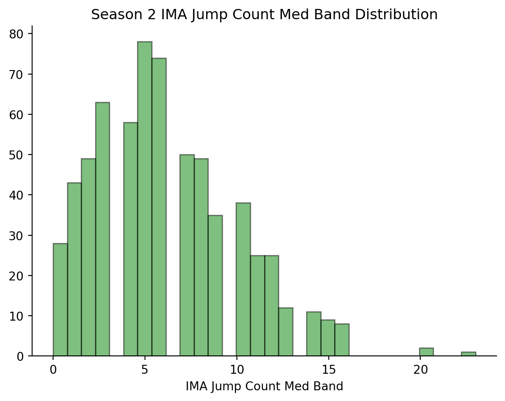
mean: 6.145896656534954
std: 3.883953803064002
min: 0
max: 23
Percentiles: [3. 6. 9.]3.4.3.7 IMA Jump Count High Band Graphs:
hist_stat(df1['IMA Jump Count High Band'], df1)
hist_stat(df2['IMA Jump Count High Band'], df2)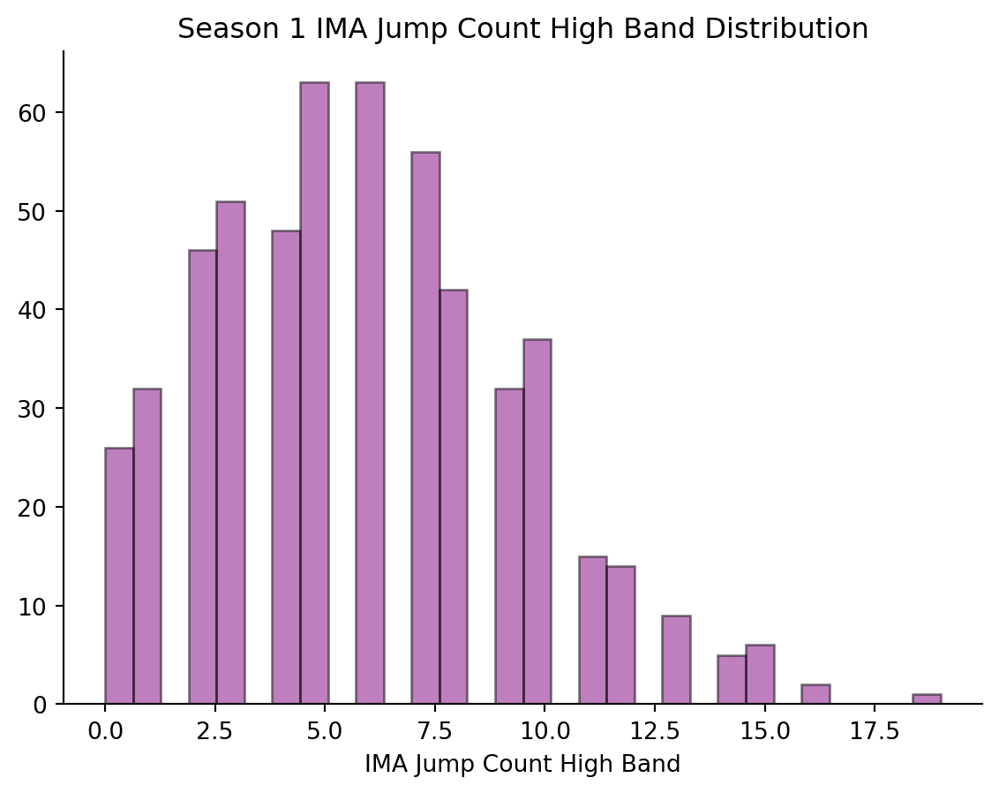
mean: 5.855839416058394
std: 3.5157651496298046
min: 0
max: 19
Percentiles: [3. 6. 8.]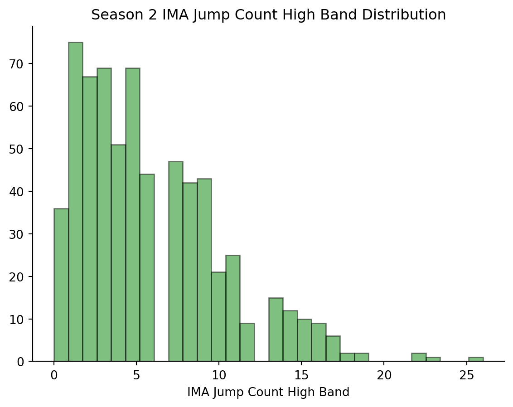
mean: 5.775075987841945
std: 4.403078372952223
min: 0
max: 26
Percentiles: [2. 5. 8.]Overall, all of the IMA Jump Count... (Low/Med/High) ...Band, experienced a right skew. It appears we have a higher amount of Low Bands as the maximums were much higher (67 and 70 for Season 1 and Season 2 respectively) compared to that of Med and High Bands.
This means there are some extreme outliers/observations that can contribute to analysis. For example, we might be able to look into which players induced these extreme outlier observations and then examine if there’s something different in their training regime that we can add to other player regimes.
Another reasoning for this positive skew is that players often observe a lack of Low/Med/High counts in terms of bands compared to experiencing these bands. We might need to take a look at the higher counts for each band to take a look at what’s different about these types of events (warm-up/game) compared to that of the lower counts for each band.
3.4.3.8 Explosive Efforts Graphs:
hist_stat(df1['Explosive Efforts'], df1)
hist_stat(df2['Explosive Efforts'], df2)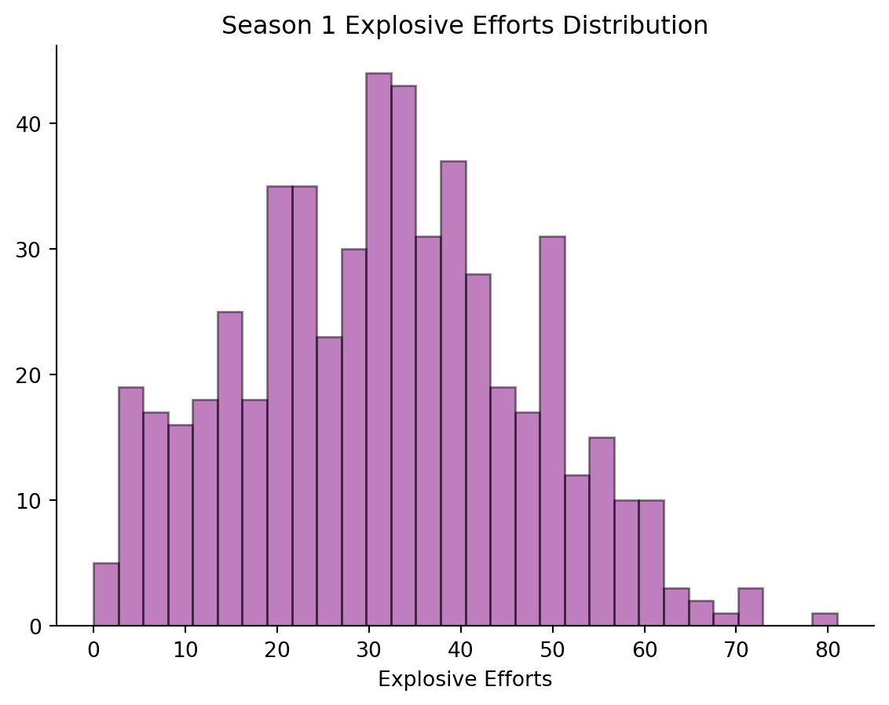
mean: 31.562043795620436
std: 15.320832300898099
min: 0
max: 81
Percentiles: [20. 32. 42.]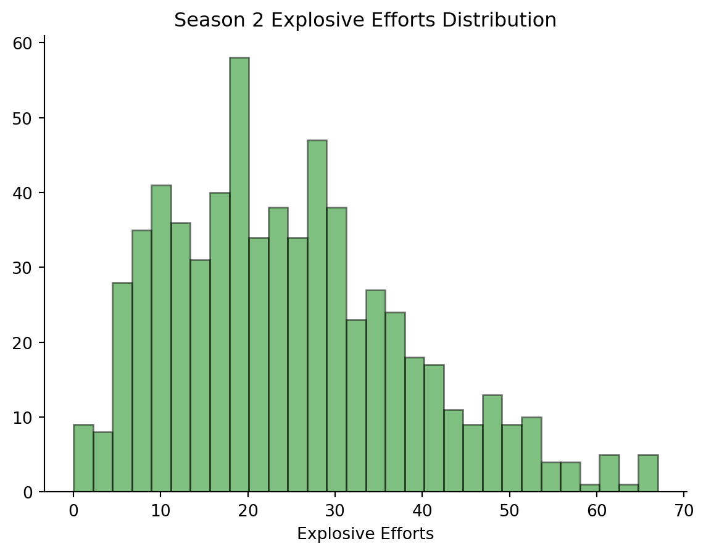
mean: 24.53647416413374
std: 13.649856352721827
min: 0
max: 67
Percentiles: [14. 23. 33.]In Explosive Efforts, it appears we have yet another positively skewed distribution. In Season 1, we see a lower frequency for the minimum (0) compared to that of Season 2. Otherwise, the shape of the rest of the distribution remains relatively similar.
This may be a result of players not experiencing any Explosive Efforts at specific periods. We might want to take a look at the wins/losses of games in Season 1 and 2. Allowing us to compare successes across seasons. This would allow us to see a possible correlation with non-explosive efforts in both seasons. There might be a correlation, but as of now we’re not sure what the correlation might be.
3.4.3.9 Position Graphs:
categorical_stats(df1['Position'], df1)
categorical_stats(df2['Position'], df2)
print(df1['Position'].unique())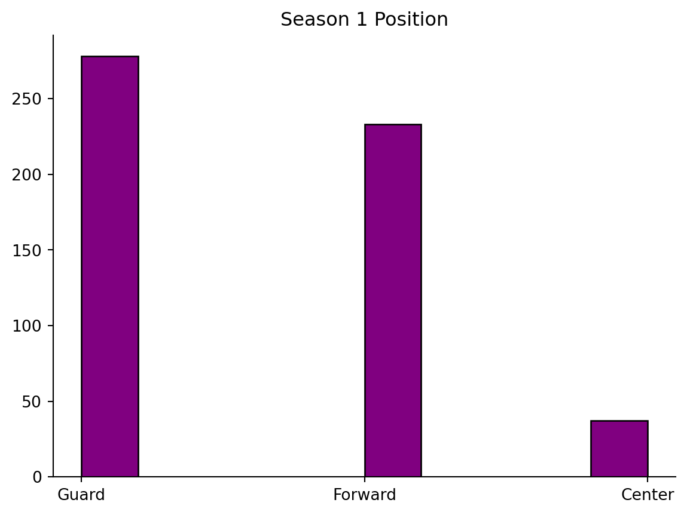
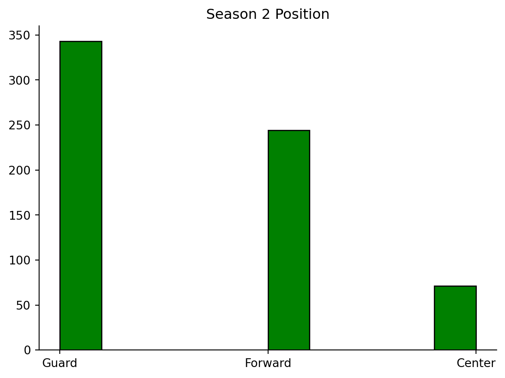
['Guard' 'Forward' 'Center']Consistently, we see more observations for Period under Guard than in Forward and in Center (ordered in descending order). This might indicate that warmups/movement prep/game periods witnessed more Guard activity than that of the other positions. We might be able to explore how this impacts the Guard(s) during gamedays/warmups, and if we should be focusing attentions on the others in Position in the same manner.
3.4.3.10 Period Graphs:
categorical_stats(df1['Period'], df1)
categorical_stats(df2['Period'], df2)
print(df1['Period'].unique())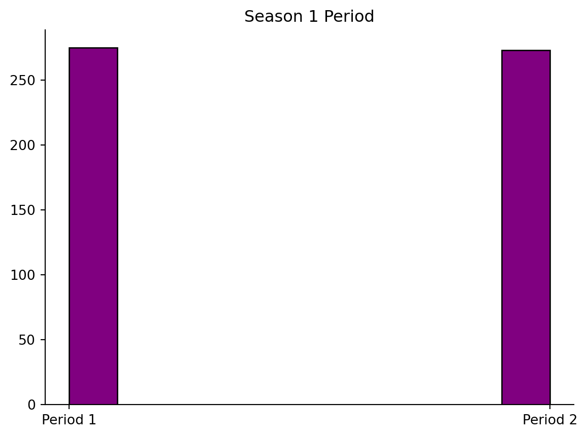
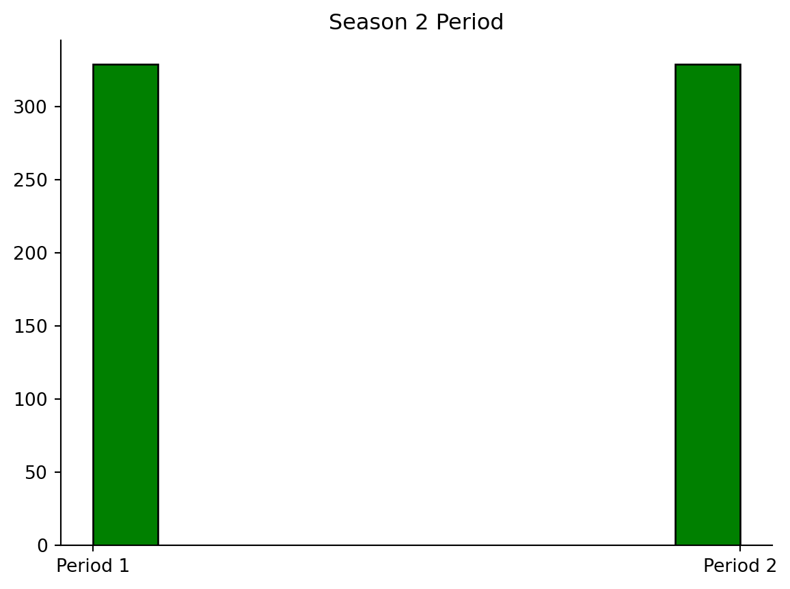
['Period 1' 'Period 2']A couple things to note is that warm-ups experienced higher observations. Movement prep, even with numbers of observations in Season 1, experienced significantly lower observations in Period 1 and Period 2 of Season 2 in comparison.
3.4.4 Examine Correlations
3.4.4.1 Correlations above 0.75:
IMA Accel TotalandTotal Player Load(0.86)IMA Decel TotalandTotal Player Load(0.84)Explosive EffortsandTotal Player Load(0.77)IMA Accel TotalandIMA Decel Total(0.75)Explosive EffortsandIMA Accel Total(0.84)Explosive EffortsandIMA Decel Total(0.76)
# Creating a pairplot for the variables
sns.pairplot(df2[['Total Player Load', 'Player Load Per Minute', 'IMA Accel Total',
'IMA Decel Total', 'IMA Jump Count Low Band', 'IMA Jump Count Med Band',
'IMA Jump Count High Band', 'Explosive Efforts']], plot_kws={'alpha': 0.5})
plt.show()
# Calculating the correlations for the variables
correlation = df2[['Total Player Load', 'Player Load Per Minute', 'IMA Accel Total',
'IMA Decel Total', 'IMA Jump Count Low Band', 'IMA Jump Count Med Band',
'IMA Jump Count High Band', 'Explosive Efforts']].corr()
plt.figure(figsize=(10, 8))
# Plotting the correlation in a heatmap
sns.heatmap(correlation, annot=True, cmap='coolwarm', center=0)
# Adding a title
plt.title('Correlation between 3 continuous chosen variables')
plt.show()
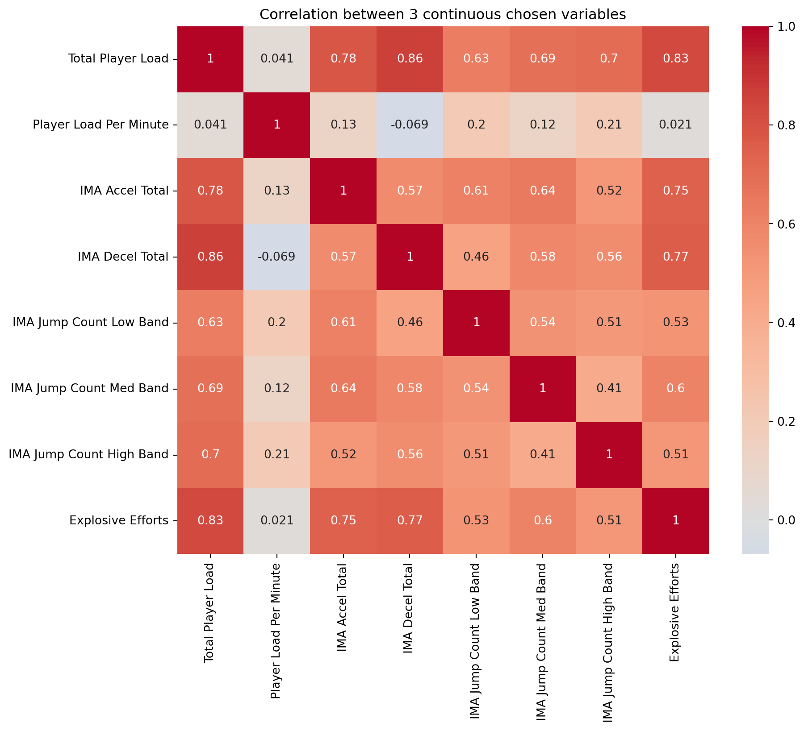
Correlations above 0.75:
IMA Accel TotalandTotal Player Load(0.82)IMA Decel TotalandTotal Player Load(0.9)Explosive EffortsandTotal Player Load(0.79)IMA Decel TotalandIMA Accel Total(0.75)Explosive EffortsandIMA Accel Total(0.84)Explosive EffortsandIMA Decel Total(0.84)
Negative Correlations:
IMA Jump Count Med BandandPlayer Load per Minute(-0.41)IMA Jump Count High BandandPlayer Load per Minute(-0.064)IMA Accel TotalandIMA Jump Count Med Band(-0.014)IMA Jump Count Low BandandIMA Jump Count Med Band(-0.054)Explosive EffortsandIMA Jump Count Med Band(-0.19)
We thought these negative correlations were an interesting factor because they were not seen in the Season 1’s data set.
3.4.5 Explore Relationships
3.4.5.1 Relationship between IMA Accel Total and Total Player Load
fig, axes = plt.subplots(1, 2, figsize=(12, 5))
# Creating a scatterplot to look at the relationship in Season 1
sns.scatterplot(data=df1, x='IMA Accel Total', y='Total Player Load', ax=axes[0], color='blue')
# Setting title and axis labels
axes[0].set_title('Season 1 IMA Accel Total vs Total Player Load')
axes[0].set_xlabel('IMA Accel Total')
axes[0].set_ylabel('Total Player Load')
# Creating a scatterplot to look at the relationship in Season 2
sns.scatterplot(data=df2, x='IMA Accel Total', y='Total Player Load', ax=axes[1], color='green')
# Setting title and axis labels
axes[1].set_title('Season 2 IMA Accel Total vs Total Player Load')
axes[1].set_xlabel('IMA Accel Total')
axes[1].set_ylabel('Total Player Load')
plt.tight_layout()
plt.show()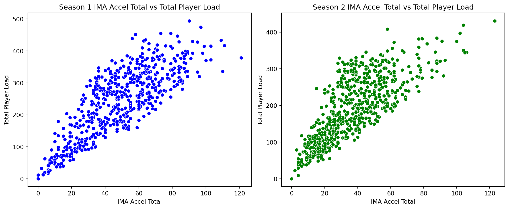
Both relationships appear to be positive and strongly correlated.
3.4.5.2 Relationship between IMA Decel Total and Total Player Load
fig, axes = plt.subplots(1, 2, figsize=(12, 5))
# Creating a scatterplot to look at the relationship in Season 1
sns.scatterplot(data=df1, x='IMA Decel Total', y='Total Player Load', ax=axes[0], color='blue')
# Setting title and axis labels
axes[0].set_title('Season 1 IMA Decel Total vs Total Player Load')
axes[0].set_xlabel('IMA Decel Total')
axes[0].set_ylabel('Total Player Load')
# Creating a scatterplot to look at the relationship in Season 2
sns.scatterplot(data=df2, x='IMA Decel Total', y='Total Player Load', ax=axes[1], color='green')
# Setting title and axis labels
axes[1].set_title('Season 2 IMA Decel Total vs Total Player Load')
axes[1].set_xlabel('IMA Decel Total')
axes[1].set_ylabel('Total Player Load')
plt.tight_layout()
plt.show()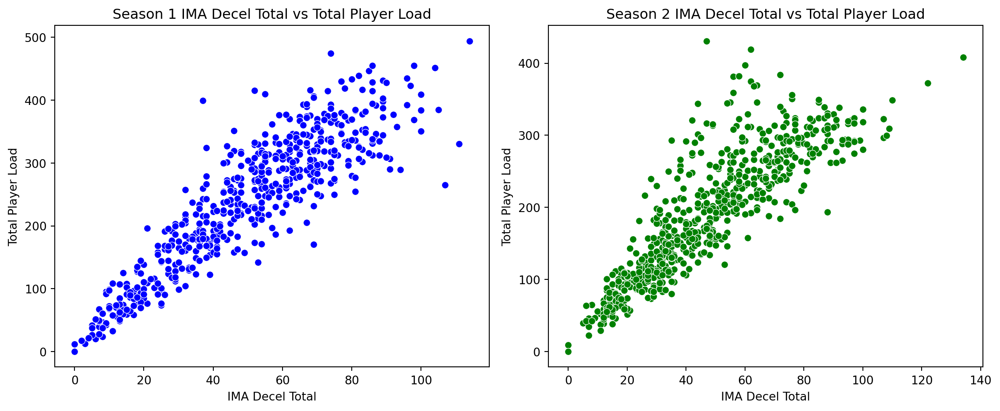
Both relationships are highly correlated and seem to have small differences in their trends.
3.4.5.3 Relationship between Explosive Efforts and Total Player Load
fig, axes = plt.subplots(1, 2, figsize=(12, 5))
# Creating a scatterplot to look at the relationship in Season 1
sns.scatterplot(data=df1, x='Explosive Efforts', y='Total Player Load', ax=axes[0], color='blue')
# Setting title and axis labels
axes[0].set_title('Season 1 Explosive Efforts v. Total Player Load')
axes[0].set_xlabel('Explosive Efforts')
axes[0].set_ylabel('Total Player Load')
# Creating a scatterplot to look at the relationship in Season 2
sns.scatterplot(data=df2, x='Explosive Efforts', y='Total Player Load', ax=axes[1], color='green')
# Setting title and axis labels
axes[1].set_title('Season 2 Explosive Efforts v. Total Player Load')
axes[1].set_xlabel('Explosive Efforts')
axes[1].set_ylabel('Total Player Load')
plt.tight_layout()
plt.show()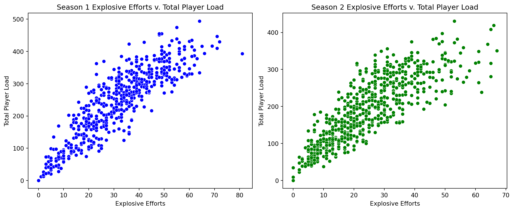
Both relationships are highly correlated and seem to have small differences in their trends.
3.4.5.4 Relationship between IMA Decel Total and IMA Accel Total
fig, axes = plt.subplots(1, 2, figsize=(12, 5))
# Creating a scatterplot to look at the relationship in Season 1
sns.scatterplot(data=df1, x='IMA Decel Total', y='IMA Accel Total', ax=axes[0], color='blue')
# Setting title and axis labels
axes[0].set_title('Season 1 IMA Decel Total v. IMA Accel Total')
axes[0].set_xlabel('IMA Decel Total')
axes[0].set_ylabel('IMA Accel Total')
# Creating a scatterplot to look at the relationship in Season 2
sns.scatterplot(data=df2, x='IMA Decel Total', y='IMA Accel Total', ax=axes[1], color='green')
# Setting title and axis labels
axes[1].set_title('Season 1 IMA Decel Total v. IMA Accel Total')
axes[1].set_xlabel('IMA Decel Total')
axes[1].set_ylabel('IMA Accel Total')
plt.tight_layout()
plt.show()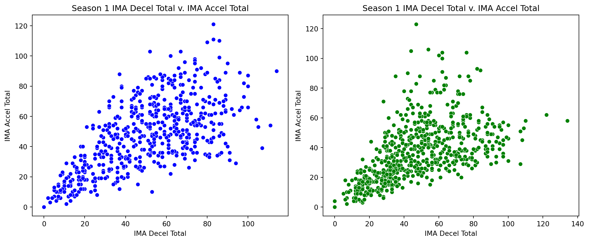
Both relationships are moderate to strongly correlated and seem to have few differences in their trends.
3.4.5.5 Relationship between IMA Accel Total and Explosive Efforts
fig, axes = plt.subplots(1, 2, figsize=(12, 5))
# Creating a scatterplot to look at the relationship in Season 1
sns.scatterplot(data=df1, x='IMA Accel Total', y='Explosive Efforts', ax=axes[0], color='blue')
# Setting title and axis labels
axes[0].set_title('Season 1 IMA Accel Total vs Explosive Efforts')
axes[0].set_xlabel('IMA Accel Total')
axes[0].set_ylabel('Explosive Efforts')
# Creating a scatterplot to look at the relationship in Season 2
sns.scatterplot(data=df2, x='IMA Accel Total', y='Explosive Efforts', ax=axes[1], color='green')
# Setting title and axis labels
axes[1].set_title('Season 2 IMA Accel Total vs Explosive Efforts')
axes[1].set_xlabel('IMA Accel Total')
axes[1].set_ylabel('Explosive Efforts')
plt.tight_layout()
plt.show()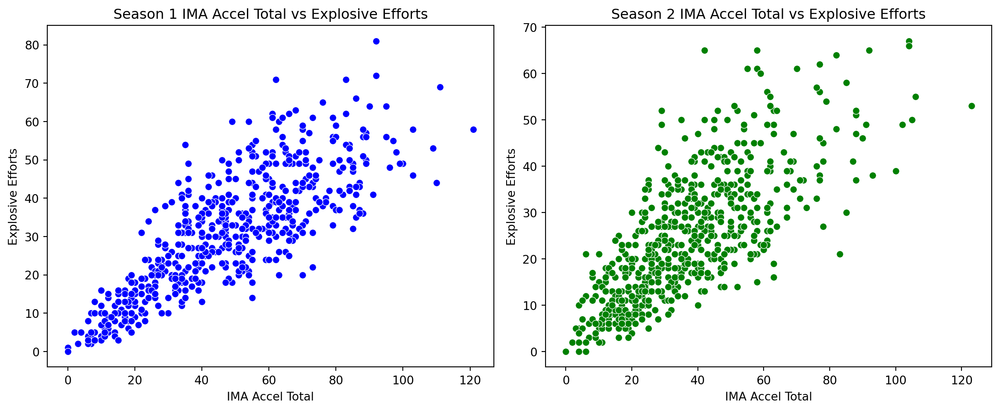
These correlations appear to be positive and moderate-highly. Their trends occur to be different with the season 2 data to have a higher trend line.
3.4.5.6 Relationship between IMA Decel Total and Explosive Efforts
fig, axes = plt.subplots(1, 2, figsize=(12, 5))
# Creating a scatterplot to look at the relationship in Season 1
sns.scatterplot(data=df1, x='IMA Decel Total', y='Explosive Efforts', ax=axes[0], color='blue')
# Setting title and axis labels
axes[0].set_title('Season 1 IMA Decel Total vs Explosive Efforts')
axes[0].set_xlabel('IMA Decel Total')
axes[0].set_ylabel('Explosive Efforts')
# Creating a scatterplot to look at the relationship in Season 2
sns.scatterplot(data=df2, x='IMA Decel Total', y='Explosive Efforts', ax=axes[1], color='green')
# Setting title and axis labels
axes[1].set_title('Season 2 IMA Decel Total vs Explosive Efforts')
axes[1].set_xlabel('IMA Decel Total')
axes[1].set_ylabel('Explosive Efforts')
plt.tight_layout()
plt.show()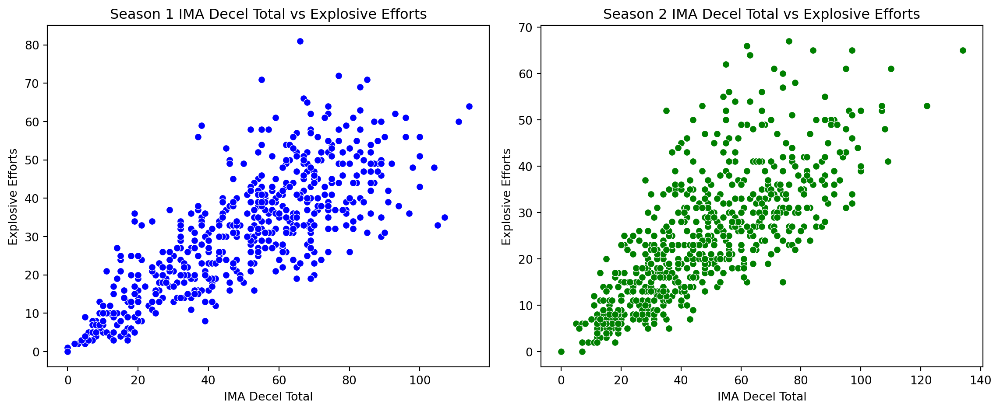
Both the comparisons of IMA Decel Total and IMA Accel Totals compared to Explosive Efforts are very similar. The trends both show the same shape and correlations.
3.4.6 Looking at negative correlations:
IMA Jump Count Med BandandPlayer Load per Minute(-0.41)IMA Jump Count High BandandPlayer Load per Minute(-0.064)IMA Accel TotalandIMA Jump Count Med Band(-0.014)IMA Jump Count Low Band and IMA Jump Count Med Band(-0.054)Explosive Efforts and IMA Jump Count Med Band(-0.19)
3.4.6.1 Relationship between IMA Jump Count Med Band and Player Load Per Minute
fig, axes = plt.subplots(1, 2, figsize=(12, 5))
# Creating a scatterplot to look at the relationship in Season 1
sns.scatterplot(data=df1, x='IMA Jump Count Med Band', y='Player Load Per Minute', ax=axes[0], color='blue')
# Setting title and axis labels
axes[0].set_title('Season 2 Jump Count Med Band vs Player Load per Minute')
axes[0].set_xlabel('IMA Jump Count Med Band')
axes[0].set_ylabel('Player Load per Minute')
# Creating a scatterplot to look at the relationship in Season 2
sns.scatterplot(data=df2,x = 'IMA Jump Count Med Band', y='Player Load Per Minute', ax=axes[1], color='green')
# Setting title and axis labels
axes[1].set_title('Season 2 Jump Count Med Band vs Player Load per Minute')
axes[1].set_xlabel('IMA Jump Count Med Band')
axes[1].set_ylabel('Player Load Per Minute')
plt.tight_layout()
plt.show()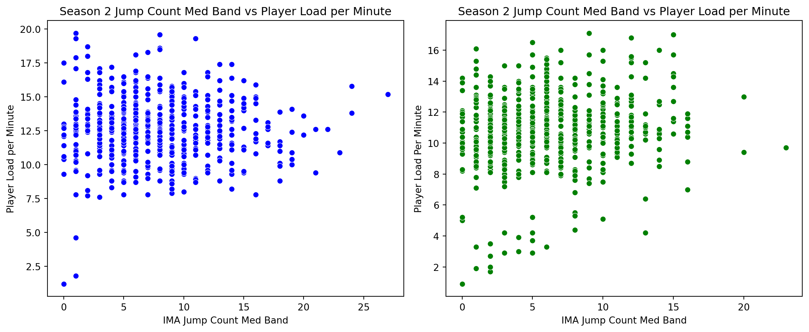
These correlations appear to not be overwhelmingly negative but rather just scattered in similar ways with a slight negative skew for the Season 2 data. We will not be exploring the lower correlated sets as it’s clear that the negative value is not fully important for the relationships with such small correlations.
3.4.6.2 Exploring the Negative Correlation(0.19) between IMA Jump Count Med Band and Explosive Efforts
fig, axes = plt.subplots(1, 2, figsize=(12, 5))
# Creating a scatterplot to look at the relationship in Season 1
sns.scatterplot(data=df1, x='IMA Jump Count Med Band', y='Explosive Efforts', ax=axes[0], color='blue')
# Setting titles and axis labels
axes[0].set_title('Season 1 Jump Count High Band vs Player Load')
axes[0].set_xlabel('IMA Jump Count Med Band')
axes[0].set_ylabel('Explosive Efforts')
# Creating a scatterplot to look at the relationship in Season 2
sns.scatterplot(data=df2,x = 'IMA Jump Count Med Band', y='Explosive Efforts', ax=axes[1], color='green')
# Setting titles and axis labels
axes[1].set_title('Season 2 Jump Count High Band vs Player Load')
axes[1].set_xlabel('IMA Jump Count Med Band')
axes[1].set_ylabel('Explosive Efforts')
plt.tight_layout()
plt.show()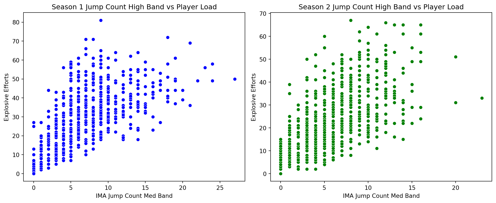
The correlation between IMA Jump Count Med Band and Explosive Efforts is different for both the Season 1 data(0.076) and the Season 2 data(-0.19). This raises the question of a potential different play style, or energy exertion during the games.
3.4.6.3 Statistical Analysis of IMA Jump Count Med Band and Explosive Efforts
# Creating a third dataframe to compare IMA Jump Count Med Band across both seasons
df3= pd.DataFrame({
'IMA Jump Count Med Band': pd.concat([df1['IMA Jump Count Med Band'], df2['IMA Jump Count Med Band']], ignore_index=True),
'Season': ['Season 1'] * len(df1) + ['Season 2'] * len(df2)
})
plt.figure(figsize=(8, 6))
# Creating boxplot to compare IMA Jump Count Med Band across seasons
sns.boxplot(data=df3, x='Season', y='IMA Jump Count Med Band', hue='Season', palette='spring')
# Adding title and axis labels
plt.ylabel('IMA Jump Count Med Band')
plt.title('IMA Jump Count Med Band: Season 1 vs Season 2')
plt.grid(axis='y')
plt.show()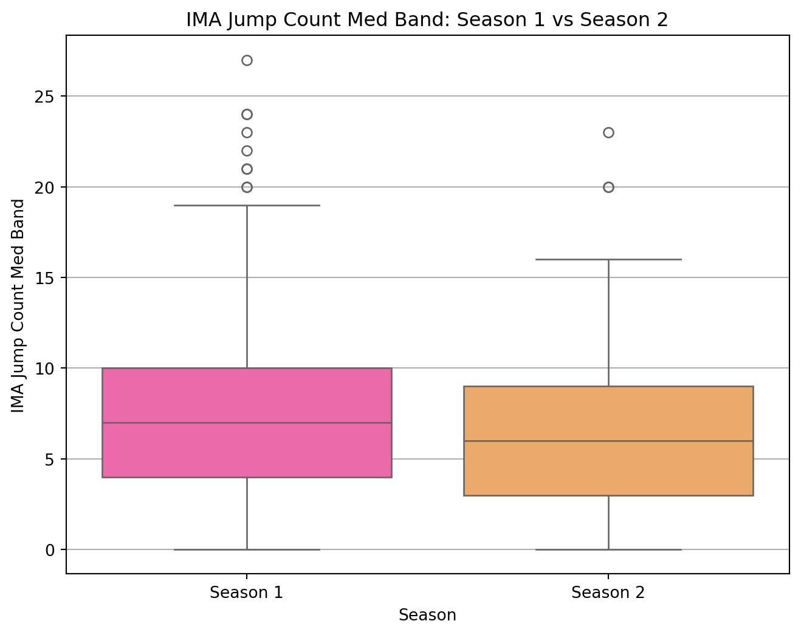
It appears that the Season 1 data has a larger spread then compared to Season 2. Though, the IQR is larger in the Season 2 data, meaning the values have more variability in this middle range. The mean of the Season 2 data is also slightly larger than that of the Season 1 data.
# Creating a third dataframe to compare Explosive Efforts across both seasons
df3= pd.DataFrame({
'Explosive Efforts': pd.concat([df1['Explosive Efforts'], df2['Explosive Efforts']], ignore_index=True),
'Season': ['Season 1'] * len(df1) + ['Season 2'] * len(df2)
})
plt.figure(figsize=(8, 6))
# Creating boxplot to compare Explosive Efforts across seasons
sns.boxplot(data=df3, x='Season', y='Explosive Efforts', hue='Season', palette='spring')
# Adding title and axis labels
plt.ylabel('Explosive Efforts')
plt.title('Explosive Efforts: Season 1 vs Season 2')
plt.grid(axis='y')
plt.show()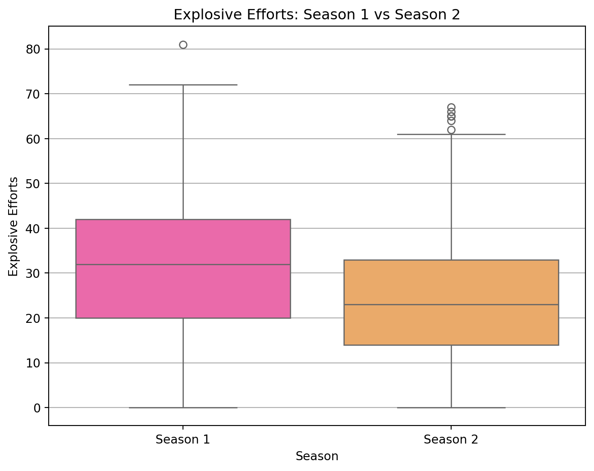
The spread of Explosive Efforts is larger in the Season 1 data, but the IQR is significantly larger in the Season 2 data. This means that the data has more variability in the mid range of Explosive Efforts. The mean is also larger in the Season 2 data, meaning players in Season 1 had fewer Explosive Efforts than that of Season 2.